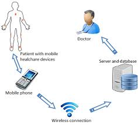
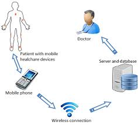

This website is to learn about the different telecoms systems such as Fiber Based systems, Copper Based Systems, and Wireless Based Systems.
Click the links below to learn about the different telecoms systems.

 
